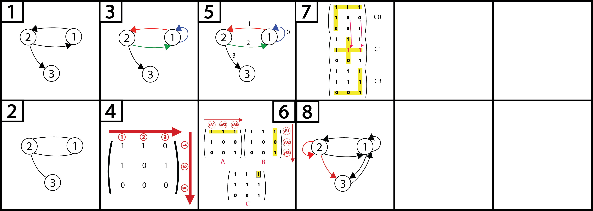

Graphes

Définitions et concepts de base : (numéros associés aux figures)
1. Graphe orienté : Les sommets sont reliés par des arcs ("flèches").
2. Graphe non orienté : Les sommets sont reliés par des arrêtes.
3.
- Degré sortant d'un sommet : Nombres d'arcs dirigés hors du sommet désigné (ex: d+(1) = 2 en rouge et bleu). N.B.: Arc bleu = sortant ET entrant.
- Degré entrant d'un sommet : Nombres d'arcs dirigés vers le sommet désigné (ex: d-(1) = 1 en vert).
- Degré d'un sommet : Somme degrés sortants et entrants (ex: = d+(1) + d-(1) = 2 + 1 = 3).
- Taille d'un graphe : Nombre d'arcs (ex: m = 4).
- Ordre d'un graphe : Nombre de sommets (ex: n = 3).
- Liste d'adjacence : Tableau à deux colonnes qui présente chaque sommet et ses successeurs correspondants. L'arc "rentrant" d'un sommet est le successeur du sommet dont il provient et d'où il "sort" (ex: 3 est le successeur de 2). Les successeurs sont rangés dans l'ordre croissant des numéros :
| Sommet |
Successeur |
| 1 |
1,2 |
| 2 |
3 |
| 3 |
/ |
4. Matrice d'adjacence : La matrice "M" est établie à partir de la liste d'adjacence du graphe n°3. Étant une matrice, chaque case peut être associée à un numéro avec dans l'axe "x" le numéro du successeur correspondant et dans l'axe "y" le numéro du sommet correspondant. Il y a autant de sommets que de successeur en x et en y, il s'agit d'une matrice carrée. Plus simplement, si on a 3 sommets, comme ici, on aura 3 lignes pour 3 colonnes. Les numéros entourés qui figurent sur le schéma ci-dessous ne sont présents qu'à titre indicatif, pour aider à la lecture, en reprenant la numérotation de l'axe des "x" et des "y". De même que pour les flèches qui figurent ces axes. Ces éléments présents à titre indicatif sont en rouge.
5. Etablir LS (Liste des Successeurs) et TS (Têtes des Successeurs) :
-
Etape 1 : Liste d'adjacence : déjà faite avant le 4.
-
Etape 2 : Etablir couples de A (ensemble des arcs de G) en ayant préalablement numéroté en indice chaque relation sur le graphe (cf. figure n°5) et éventuellement sur la liste d'adjacence, en partant de 0.
A = { ( 1,1 ) ; ( 1,2 ) ; ( 2,1 ) ; ( 2,3 ) }
-
Etape 3 : Etablir tableaux de LS et TS à partir de A :
LS : Chaque case est remplie avec le successeur de chacun des couples sommet-successeur établis avec A. les cases sont numérotées en indice de la même façon que pour A. Il y a autant de cases que de relations.
Taille = m = nombre de couples / cases + 1 (+ 1 car on commence à 0).
TS : Numéroter chaque case en indice en commençant par 1 : il doit y avoir n (sommets) + 1 cases. Chaque case se voit attribuer des n° qui sont relatifs à ceux donnés en indice de LS (position) : le n° affecté correspond à la 1ère position du successeur du sommet correspondant.
/!\ Si il n'y a pas de successeurs pour un sommet : le n° correspondant est celui du couple du sommet/case suivant(e). La dernière case ne correspond à aucun sommet : le n° correspondant à la case est égal à m.
Explication : Le sommet 1 a pour 1er successeur lui même, qui est en position 0. Le sommet 2 a pour 1er successeur le sommet 1, qui est ici en position 2. Le sommet 3 n'a pas de successeur, qui prend donc le n° de la case suivante, qui est la dernière.
Le n° de la dernière case est égal à m = nombres cases (LS) + 1 = 4 + 1 = 5
LS : Liste des Successeurs
TS : Têtes des Successeurs
6. Calculer le produit (réel ou booléen) d'une matrice carrée :
-
Produit matriciel réel (M²=M*M=M.M) : Il faut faire l'addition terme à terme en x (ligne) pour A et y (colonne) pour B. Dans le cas présent. Pour calculer la case en xC3,yC3 (en jaune) de la matrice C, il faudrait faire :
(xA1*yB1) + (xA2*yB2) + (xA3*yB3)
(1*1) + (1*1) + (1*1)
= 1+1+1
= 3
/!\ Le résultat de la matrice réelle n'est pas représenté ici.
-
Produit matriciel booléen (M xor M) : Il donne le résultat d'une matrice d'adjacence. Il peut être obtenu de deux façons. Soit le produit matriciel réel a été préalablement calculé, et dans ce cas, toutes les valeurs > 1 seront égales à 1 (par exemple pour xC3/yC3, 3 devient 1). Ou alors on pourra appliquer la méthode suivante :
La matrice C représente le résulat du produit matriciel booléen des matrices A et B. Le produit booléen se calcule avec les mêmes opérations que pour le produit réel, si ce n'est que les "+" sont remplacés par des "OU" et les "*" par des "ET". Ensuite, ce sont les règles de logique qui sont appliquées, qui sont rappelées ici :
0 OU 0 : 0
0 OU 1 : 1
1 OU 0 : 1
1 OU 1 : 1
0 ET 0 : 0
0 ET 1 : 0
1 ET 0 : 0
1 ET 1 : 1
Par exemple, pour calculer la case xC3,yC3 (jaune), on fera :
(xA1 ET yB1) OU (xA2 ET yB2) OU (xA3 ET yB3)
(1 ET 1) OU (1 ET 1) OU (1 ET 1)
= 1 OU 1 OU 1
= 1
/!\ On pourra retenir que le résultat d'une case de la matrice booléenne fera 1 dès lors que l'un des termes résultant de la conjonction de ET (séparés par des OU) fera 1.
7. Calculer la matrice d'adjacence de la fermeture transitive d'un graphe via l'algorithme de Warshall :
-
Etape 1 (C0) : Metttre en évidence la première ligne et la première colonne de la matrice considérée. Mettre des 1 aux cases là où les lignes et les colonnes de la première ligne/colonne ont des 1 qui se croisent. De façon plus claire, pour une case donnée hors des couples de la première ligne/colonne : il faudra voir si il existe à la fois en x et y un 1 au regard du couple première ligne/colonne.
-
Etape 2 (C1) : On procède de la même façon avec les couples de la deuxième ligne/deuxième colonne.
-
Etape 3 (Cn) : Faire de même jusqu'à arriver à la dernière ligne et colonne du graphe.
-
Etape 4 : Ajouter les nouvelles relations au graphe qui pourra été modifié grâce aux 1 (successeurs de sommets) issus de cet algorithme.
8. La matrice résultante montre les nouvelles relations qui sont en rouge après application de l'algorithme de Warshall en 7.
Sitographie utile :
-
Modèles et algorithmes de graphes
-
Fonctions Python